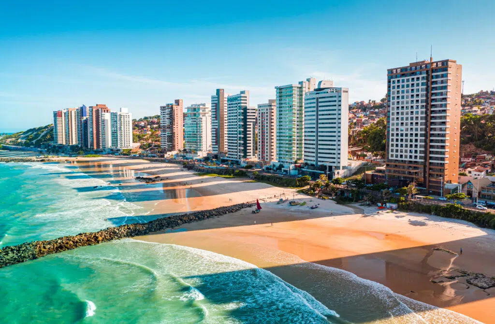

Natal, no Rio Grande do Norte, é uma cidade encantadora que combina um clima acolhedor com praias paradisíacas. Contudo, ela vai muito além do turismo convencional. Rica em história, cultura e belezas naturais, a cidade se destaca como um verdadeiro tesouro do Nordeste brasileiro.
Além disso, Natal é palco de curiosidades fascinantes que despertam o interesse de visitantes de todas as partes. Portanto, confira abaixo as curiosidades imperdíveis sobre Natal – RN e se surpreenda com tudo o que esta cidade incrível tem a oferecer.
A cidade de Natal foi oficialmente fundada em 25 de dezembro de 1599, no dia de Natal, o que naturalmente inspirou o seu nome.
Além disso, sua história está intimamente ligada à construção do Forte dos Reis Magos, uma obra concluída no mesmo período e que desempenhou um papel estratégico durante a colonização portuguesa.
Curiosamente, esse forte, que tem o formato de uma estrela de cinco pontas, não apenas protegeu a região de invasores, mas também se tornou um símbolo marcante da cidade.
Uma das maiores atrações históricas de Natal é o emblemático Forte dos Reis Magos, cuja forma peculiar lembra uma estrela de cinco pontas.
Além de sua arquitetura singular, a estrutura foi construída com materiais curiosos, como pedras calcárias e óleo de baleia, que reforçavam sua durabilidade.
Natal faz jus ao seu nome de maneira encantadora! A cidade mantém viva a tradição de montar uma imensa árvore de Natal no bairro de Mirassol, que se transforma em um ponto turístico imperdível durante as festas de fim de ano.
Natal é carinhosamente conhecida como a “Cidade do Sol”. Com cerca de 300 dias de sol por ano, a cidade oferece um clima perfeito para quem deseja aproveitar o litoral em qualquer época.
Nos anos 1940, Natal entrou para a história com o famoso Cine Rex, que foi o primeiro cinema do Brasil equipado com ar-condicionado.
| Natal/RN | ||
|---|---|---|
| Ponto turístico | Endereço | Valor de Acesso |
| Forte dos Reis Magos | Av. Pres. Café Filho - Ribeira | Gratuito |
| Parque das Dunas | Av. Eng. Roberto Freire -Ponta Negra | R$ 10,00 |
| Lagoa de Jacumã | Rua do Jacumã - Jacumã | Gratuito |
| Museu Câmara Cascudo | Rua Ferreira Chaves, 250 - Cidade Alta | R$ 5,00 (aproximadamente) |
| Praia de Ponta negra | Ponta Negra | Gratuito |
| Genpabu | Genipabu, Extremoz | R$ 10,00 (aproximadamente) |
| Centro Histórico | Cidade Alta | Gratuito |